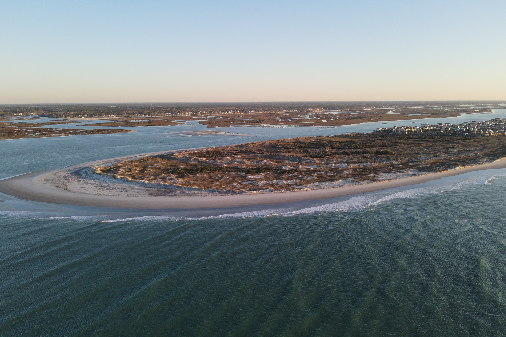
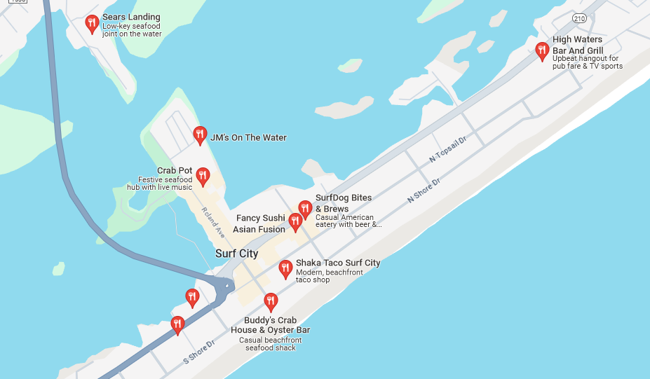

Location and Directions
Our Address
Topsail Beach
820 S. Anderson Blvd
Topsail Beach, NC 28445
Contact Information
- Phone: 910-328-5841
- Email: info@topsailbeach.com
Send a Message
Facilities and Amenities
- Accessibility: The Town of Topsail Beach has three beach wheelchairs that can be used on the beach by persons who have difficulty walking in sand. They are available free of charge on a first-come, first-served basis by calling the Topsail Beach Police Department at 910-328-4851. The chairs may be used only within the town limits of Topsail Beach.
- Parking: Both free and paid parking will be available at Topsail Beach. Visit Beach Access & Parking for more information.
- Restrooms: Restrooms will be available throughout the beach. You can view the Public Access Location and Amenities PDF file for more information.
Activities and Attractions
-

Lea Island
We have a beautiful soundfront with access to the Intercoastal Waterway and nearby Lea Island
-
Town's Marina
This area provides boaters with all the accomodations necessary for their water activities
-
Jolly Roger Fishing Pier
This is where king mackerel fisherman demonstrate their fishing skills at the very end of the pier or spot fisherman stand shoulder to shoulder in the fall
Dining and Refreshments
Local Restaurants
For those looking for a slightly more relaxing vacation the Town of Topsail Beach has several unique restaurants catering to all ages and tastes.